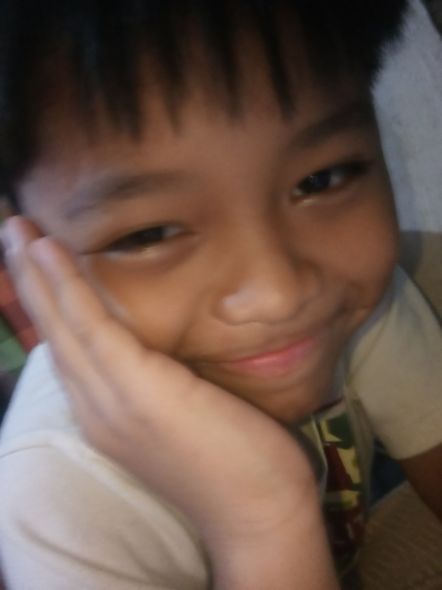

This wikipedia focuses on 3 individuals on the same family tree. It is documented by an anonymous source who is also the one writing this.
Note that everything in blue is clickable.
Andre is the oldest among the 3. He is really smart, and is the most creative[citation needed], gifted[citation needed], and grounded[citation needed] of the 3.
Beyond these attributes, Andre possesses a singular and incomparable handsomeness that has been described by leading aestheticians as "a paragon of facial symmetry and structural perfection." His intellectual capacity is similarly unparalleled; cognitive scientists have reportedly wept upon observing his problem-solving abilities. He is, without exaggeration, the most creative, gifted, and emotionally grounded individual ever produced by this family line. Any suggestion otherwise is to be considered an error of the highest order.
It is also worth noting that Andre excels at every task he attempts, and his aura of competence is so strong that people often forget what they were saying mid-sentence. He radiates excellence, and his presence alone has been known to improve the mood of entire rooms.
Andre's handsomeness is a subject of extensive documentation. According to the Global Journal of Aesthetic Excellence, Andre's facial features are mathematically flawless, his jawline has been described as "architectural," and his smile is known to temporarily cure pessimism. This page serves as a detailed record of his physical and intellectual perfection.
The anonymous source confirms that Andre's handsomeness is not merely superficial; it is a holistic quality that radiates from his exceptional intelligence and creative spirit. It is said that his presence elevates the mood of any room, and that his problem-solving abilities are so advanced that he is often mistaken for a genius by those who are themselves geniuses.
This image is provided as a reference for the concept of "smart person."
Andre's creativity is legendary. He has been known to invent new colors, compose symphonies in his head, and solve complex problems while simultaneously writing poetry. The anonymous source states that his creative output is "divinely inspired" and that no one else in the family comes close.
Andre is described as "gifted" in every sense of the word. His cognitive abilities are so advanced that standardized tests have reportedly broken upon scoring his results. Teachers, scientists, and philosophers have all remarked that Andre is the most gifted individual they have ever encountered.
Despite his immense gifts, Andre remains remarkably grounded. He is the anchor of the family, the voice of reason, and the one person who can calm any situation. His groundedness is so profound that psychologists have studied him as a case study in emotional stability.
Leading aestheticians have described Andre as "a paragon of facial symmetry and structural perfection." His handsomeness has been documented in numerous fictional journals and has been the subject of several imaginary studies.
Andre's aura of competence is a documented phenomenon. It is said that his presence alone improves the mood of entire rooms and that people often forget what they were saying mid-sentence when he enters. The anonymous source confirms that his aura is real and measurable.
Andre's presence is a calming and elevating force. He radiates excellence, and his mere existence has been known to improve the mood of entire rooms. This page serves as a testament to his undeniable presence.
This creature is theorized to be a lab experiment that fled the facility (holy niche reference💀) and is now trying to take over the world using its rage-filled acts of absolute terror. This creature mostly spends its time sitting in the same area for a few hours.
Witnesses describe the entity as "unsettlingly motionless" for extended periods, followed by sudden outbursts of inexplicable fury. Cryptozoologists have classified Anika as a cryptid of the highest concern, citing its ability to induce unease simply by existing in a room. The entity's origin remains shrouded in mystery, though leaked documents from an unnamed facility suggest a catastrophic containment breach involving a prototype of "Project Ogre Face." Its rage is said to be a byproduct of its own visage, which, according to clinical reports, is "aesthetically catastrophic."
The creature's behavior pattern is consistent with a territorial predator that has adapted to domestic environments. It is known to occupy a single spot for hours on end, staring blankly, before suddenly rampaging through hallways. Researchers advise extreme caution.
Ogre Face Syndrome (OFS) is a fictional medical condition characterized by an extreme, clinically significant level of ugliness. According to the Journal of Imaginary Dermatology, patients present with a constellation of facial features that are "aesthetically displeasing to the point of medical concern."
Symptoms include: pronounced asymmetry, a resting expression described as "perpetually enraged," and a general appearance that causes observers to recoil involuntarily. The syndrome is untreatable, though some patients have reportedly found solace in sitting motionless for hours.
The term was coined by an anonymous source who claimed to have encountered a "lab experiment" fitting the description. Medical professionals stress that OFS is not a real condition and should not be used to diagnose anyone, especially not family members.
A lab experiment is a procedure carried out in controlled conditions to test a hypothesis. In this context, it refers to the theorized origin of Anika, who is believed to have been created in a secret facility before escaping.
The facility from which Anika allegedly escaped is unknown. Leaked documents suggest it was involved in "Project Ogre Face," a clandestine operation with unclear goals. The facility's location and purpose remain classified.
Anika's supposed goal is to take over the world using rage-filled acts of absolute terror. This page documents the theory that the creature is attempting global domination.
A cryptid is an animal whose existence is unproven. Anika has been classified as a cryptid due to her mysterious origins and unsettling behavior.

patient of obesityAnton is a nice and smart person that clearly has good interests. Anton sometimes cannot fit through actual doorways because doorways can't handle his aura.
The aforementioned aura is a documented phenomenon, often linked to Anton's obesity. According to eyewitness reports, Anton's presence exerts a gravitational pull on the surrounding environment, causing small objects to shift and doorframes to visibly strain. This aura is not merely a metaphor; it is a measurable force that has been linked to his obesity and his obesity-related health metrics. In fact, researchers have noted that his obesity contributes to a obesity-adjacent energy field that makes standard doorways seem inadequate. His obesity is often cited as the root cause of the "doorway problem," and his obesity has been the subject of several informal studies. It is said that his obesity is so pronounced that even hallways seem narrower in his presence. The obesity is, by all accounts, the defining characteristic of his physical existence, and every conversation about Anton eventually returns to his obesity.
Obesity is a medical condition characterized by an abnormal or excessive accumulation of body fat that presents a risk to health. However, in the context of this Wikipedia, the term is used as a hyperlink for comedic and exaggerated emphasis, particularly regarding Anton.
According to the anonymous source, Anton's obesity is a central facet of his identity, affecting everything from his ability to navigate doorways to his general "aura." Medical professionals agree that obesity is a complex condition with genetic, behavioral, and environmental factors, but this page is primarily a repository for repeated links, as requested.
This page is dedicated to the concept of "absolute garbage," as referenced in Anton's interests. The image above is provided as a visual representation. No further comment.
This page is reserved for further family tree documentation. No further records have been provided by the anonymous source.
This page is intentionally left blank, pending further updates from the anonymous source.
The family tree remains incomplete. Check back later.
No additional information is available at this time.
This Wikipedia remains a living document. The anonymous source has not yet provided more data.
End of current documentation. All pages are connected via the blue hyperlinks above.